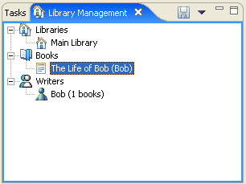

| Eclipse 3.1 - Support Logical Resources - Resource Mappings |
This solution involves adding API to the Resources plugin that maps logical models elements to workspace (i.e. file system) resources. The API is purposely simple with logical model manipulations omitted. A client can't use this interface to display logical models or gain any interesting additional knowledge about it. It's purpose is simply to map one or more model elements to workspace resources.
The API consists of the following classes:
ResourceMapping class can be viewed here.
The methods of interest are:
Object getModelObject(): The model object from which the
mapping was derived (or adapted).ResourceTraversal[] getTraversals(ResourceMappingContext, IProgressMonitor):
The resource traversal that cover the resources that constitute the model
object.ResourceTraversal
contains a set of resources and a depth flag that indicates the depth to which
the resources in the traversal are associated with the originating model object.
Resource traversals are provided to a client by a resource mapping in order
to describe the contents of a model in such a way that the client (e.g. a
repository provider) can perform its operations in as efficient a means as
possible. Methods of interest are:
getResources()getDepth() ResourceMappingContext
and RemoteResourceMappingContext
is a bit more complicated and is described later.There are two types of plugins that should be interested in resource mappings. Those who provide a model that consists of, or is persisted in, resources in the workspace and those that want to perform operations on resources. The following two sections describe how to associate a resource mapping with a model object and how to contribute menus to objects that adapt to resource mappings.
Plugins that adapted their model objects to IResource in order
to get resource specific actions shown in the context menu can now adapt to
ResourceMapping if a richer description of how the object adapts
to resources is beneficial. However, they are not required to do so if there
is no benefit. For instance a Java compilation unit (i.e. *.java file shown
in a JDT view) that now currently adapts to IFile need not adapt
to ResourceMapping since nothing is gained. However, a Java package
should adapt to ResourceMapping in order to indicate that the package
is only the files in the corresponding folder and not the subfolders.
The preferred way to adapt model elements to a resource mapping is to use an adapter factory. The following is the XML markup for contributing an adapter factory in a plugin manifest.
<extension
point="org.eclipse.core.runtime.adapters">
<factory
class="org.eclipse.example.library.logical.AdapterFactory"
adaptableType="org.eclipse.example.library.Book">
<adapter type="org.eclipse.core.resources.mapping.ResourceMapping"/>
</factory>
<factory
class="org.eclipse.example.library.logical.AdapterFactory"
adaptableType="org.eclipse.example.library.Library">
<adapter type="org.eclipse.core.resources.mapping.ResourceMapping"/>
</factory>
...
</extension>
The adapter factory implementation would look something like this:
public class AdapterFactory implements IAdapterFactory {
public Object getAdapter(Object adaptableObject, Class adapterType) {
if((adaptableObject instanceof EObject) && adapterType == ResourceMapping.class) {
return new EMFResourceMapping((EObject)adaptableObject);
}
return null;
}
public Class[] getAdapterList() {
return new Class[] {ResourceMapping.class};
}
}
For popup menu contributions, it is not required that the model objects implement
the IAdaptable interface. However, if they do, they must ensure
that the Platform adapter manager is consulted. This can be done by either subclassing
PlatformObject or by using the following line of code:
Platform.getAdapterManager().getAdapter(Object, Class)
The above is the preferable approach. However, the model object can implement
the IAdaptable interface and provide a getAdapter(Class) implementation
that creates returns an instance of ResourceMapping explicitly
when asked for one. This is a more straightforward approach but the least desirable
as the model must have explicit knowledge of the adaptation to resources.
In some cases, the provider of a logical model may not want their model to
adapt to IResource in every context or may want the object to adapt
differently for object contributions than other contexts, The workbench UI provides
a special intermediate adapter API, IContributorResourceAdapter,
for this purpose. When objects are being adapted to IResource in
the context of object contributions, the workbench first tries to adapt the
resource to IContributorResourceAdapter before trying to adapt
to IResource directly. A new sub-interface of this interface, IContributorResourceAdapter2,
has been added which provides the same capability for ResourceMapping.
The only difference is that the model provider should register a factory for
IContributorResourceAdapter since the Workbench does an instanceof
check to see if the contributed adapter is also an instance of IContributorResourceAdapter2.
The implementation of the ResourceMapping subclass for a Java
package would look something like this.
public class JavaPackageResourceMapping extends ResourceMapping {
IPackageFragment package;
...
public getModelObject() {
return package;
}
public ResourceTraversals[] getTraversals(
ResourceMappingContext context,
IProgressMonitor monitor) {
return new ResourceTraversal[] {
new ResourceTraversal(
new IResource[] { package.getCorrespondingResource() },
IResource.DEPTH_ONE, IResource.NONE)
}
}
}
This is a fairly straightforward mapping so the implementation is not complex.
The complexity of the resource mapping implementation will, of course, vary
from model to model. The EMFResourceMapping example used above
is implemented in the example and it a much more complicated implementation.
Plug-ins that contribute extensions to adaptable extension points will have
to make two changes to support the new ResourceMapping APIs:
ResourceMapping (for those for which this is
appropriate).ResourceMapping instead of
IResource and respect the depth constraints provided in the traversals.ResourceMappingContext if they manage
remote resources (more on this below)First of all, plugins that add object contributions to IResource
(CVS, Search, Compare) can now add them to ResourceMapping instead,
if the action can apply to multiple resources. Here is an XML snippet that contributes
a menu action to objects that adapt to resource mappings:
<extension
point="org.eclipse.ui.popupMenus">
<objectContribution
adaptable="true"
objectClass="org.eclipse.core.resources.mapping.ResourceMapping"
id="org.eclipse.example.library.ResourceMappingContributions">
<action
label="Show Resource Mappings"
class="org.eclipse.example.library.contributions.ShowResourceMappingsAction"
menubarPath="additions"
id="org.eclipse.example.library.showMappings"/>
</objectContribution>
</extension>
Contributions to ResourceMapping will automatically apply to objects
that adapt to IResource. This transitive association is handled
by the Workbench.
Filtering of the contributions to resource mappings can be done using action filters or expressions. An expression for filtering by project persistent property has been added to allow repository providers to have their menus appear on projects that are mapped to their repositories.
<extension
point="org.eclipse.ui.popupMenus">
<objectContribution
objectClass="org.eclipse.core.resources.mapping.ResourceMapping"
adaptable="true"
id="org.eclipse.team.ccvs.ui.ResourceMapperContributions">
<enablement>
<adapt type="org.eclipse.core.resources.mapping.ResourceMapping">
<test property="org.eclipse.ui.ide.projectPersistentProperty" args="org.eclipse.team.core.repository=org.eclipse.team.cvs.core.cvsnature" />
</adapt>
</enablement>
<action
label="%UpdateAction.label"
definitionId="org.eclipse.team.cvs.ui.update"
class="org.eclipse.team.internal.ccvs.ui.actions.UpdateAction"
tooltip="%UpdateAction.tooltip"
menubarPath="team.main/group2"
id="org.eclipse.team.cvs.ui.update">
</action> ...
</objectContribution>
</extension>
Actions that have been contributed to the ResourceMapping class
will be given a selection that contains one or more ResourceMappings.
It is the actions responsibility to translate the resource mapping into a set
of resources to be operated on. This can be done by calling getTraversals
to get the traversals of the mapping. Traversals are used to allow the clients
of the traversal to optimize their operations based on the depth of the resources
being traversed. A client may traverse the resource manually or may use the
resource and the depth as input into an operation that the action delegates
to do the work. As an example, if the user performs a CVS update on a java package
and the java package resource mapping maps to a folder of depth one, CVS would
issue an appropriate command ("cvs update -l" for those who are curious)
which would perform a shallow update on the folder the package represents.
One of the advantages of a Resource Mapping API is that it allows plug-ins to implement any operations they desire in terms of resource mappings (e.g. CVS update, CVS commit, CVS tag, dirty decoration, etc.). However, the API that has been introduced so far deals only with the local state of the model. When working with a model that may be shared between developers, you end up in a situation where the remote state of the model (i.e. the state of the model that another user has checked-in to the repository) may differ from the state in the workspace. If you performed a CVS update, you would want the local state of the model to match the remote state even if it meant that additional files needed to be included or some files needed to be removed.
This is not an issue for some logical models. For instance, a java package is a container visited to a depth of one, regardless of the remote state of the model. Given this, a repository provider can easily determine that outgoing deletions should be included when committing or that incoming additions should be included when updating. However, the resources that constitute some logical models may change over time. For instance, the resources that constitute a model element may depend of the contents of a manifest file (or some other similar mechanism). In order for the resource mapping to return the proper traversal, it must access the remote contents of the manifest file (if it differs from the local contents) in order to see if there are additional resources that need to be included. These additional resources may not exist in the workspace but the repository provider would know how to make sure they did when the selected action was performed.
In order to support these more complex models, a RemoteResourceMappingContext
can be passed to the ResourceMapping#getTraversals method. When
a context is provided, the mapping can use it to ensure that all the necessary
resources are included in the traversal. If a context is not provided, the mapping
can assume that only the local state is of interest.
A ResourceMapping need only worry about a context supplied to
the getTraversals method in cases were the resources that make
up a model change over time and the relationship between the model and resources
cannot be described by a simple traversal that is guaranteed to encompass those
resources (and only those resources) that constitute the model. For example,
although the resources of a Java package may change over time, the package can
be described as a folder of depth of one so a resource mapping for java packages
would not ned to make use of the resource mapping context.
As a more complicated example, consider an HTML file that contains several
images. Let's make the assumption that any images references from an HTML file
are part of the model of that file. When updating the local contents of the
HTML file from a repository, the user would expect that any new images would
be included. The getTraversals method for a ResourceMapping
for the HTML file model would look something like this:
public class HTMLResourceMapping extends ResourceMapping {
private HTMLFile htmlFile;
getTraversals(ResourceMappingContext context, IPorgressMonitor monitor) {
IResource[] resources = htmlFile.getResources();
if (context instanceof RemoteResourceMappingContext) {
// Look for any additional resources on the server
RemoteResourceMappingContext remoteContext = (RemoteResourceMappingContext)context;
IFile file = htmlFile.getFile();
if (remoteContext.contentDiffers(file, monitor) {
IStorage storage = remoteContext.fetchContents(file, monitor);
IResource[] additionalResources = getReferences(storage.getContents());
resources = combine(resources, additionalResources);
}
}
return new ResourceTraversal(resources, IResource.DEPTH_ZERO);
}
}
Notice that there are two sets of resources included in the model: those derived from the local contents of the HTML file in the workspace and the contents of the file remotely. In either of these two sets, there may be resources that do not exist in the workspace. For instance, the local HTML file may contain a relative link to an image that does not exist in the workspace. This resource should be included so that it will be fetched if it exists remotely. As for the remote file, it may contain a new copy that references additional images that should be fetched when the new remote contents are downloaded.
Any client that is providing the ability of sharing workspace resources through a repository and is supporting ResourceMappings should provide an appropriate context for determining the relevant remote state of the model resources. The context provides three basic queries:
The answer to the first question above depends on the type of operation that is being performed:
The Eclipse Team API includes a Subcriber class that defines an
API for providing the synchronization state between the local workspace and
a remote server. A SubscriberResourceMappingContext
has been created that uses a Subscriber to access the necessary
remote state. Clients that have a Subscriber do not need to do
any additional work to get a resource mapping context.
This example, available here, is built on a model that consists of libraries, books and writers. The code is generated by EMF. It requires Eclipse 3.1 M5 and EMF SDK 2.0.1.
The model is persisted in several types of files:
The following screen shot shows an example Library.

Here is the containment relationship of these model elements
For the purposes of this example, model containment is determined by following all the references from the file containing the selected model element to all other files. For instance, the resources associated with the writer "Bob" would be My.writers, since Bob is contained in that file, and My.books since Bob wrote a book in that book catalog. The resources associated with the Main Library would be mylib.library, My.books, since the library contains a book from that catalog, and My.writers, since the it contains Bob, the author of that book.
There are three files of interest in the example code, all of them in the org.eclipse.team.examples.library.adapt plugin.
ResourceMapping.There is also a read-me file (org.eclipse.team.examples.library.adapt/readme.html) that contains instructions on how to use the example.
Existing plugins do not need to change at all unless they want to take advantage
of the new API. For plugins that provide logical models, it may be worthwhile
for them to adapt their model objects to ResourceMappings. Of course,
this is only a benefit when combined with a repository provider implementation
that contributes at last some of it's actions to resource mappings.
The following issues would need to be addressed for this solutions.
Plugins that add object contributions will have to modify their actions to
handle logical resources. There should be some standard UI components for showing
the mappings. For instance you could show the logical model at the top and in
a details part the physical files/folders that will be affected by the operation.
There is currently a MappingSelectionDialog in the Team UI plugin
but it is not yet API. The goal is to evolve this class to the point where it
can be made API.
Full support for resource mappings depends on these factors:
ResourceTraversal#getResources() method)
make use of the context to determine any additional resources that should
be included in the mapping.Without the first point, nothing can be done so this is really the main requirement. Assuming we have a model that provides a resource mapping, we end up with the following possible scenarios:
A repository provider is not mapping aware: In this case, the best that can be done is for the model (i.e. the model's view) to provide a Show In>Navigator command which will allow the user to perform Team operations from there. Of course, this is only an issue for model elements that do not map to a single resource. Although this is a bit cumbersome, it will work in many situations. It will not work well for those models that may have added or removed resources at the root level.
A repository provider does not provide a resource mapping context or
a model does not make use of the context: For some repository providers,
it may be difficult to provide a resource mapping context. It is also possible
that a model may not make use of the context to determine which resource should
be included in the mapping. In either case, this is only an issue for models
that may add or remove resources at the root level. In reality, the number of
these cases may be small but the effects will be noticeable since operations
may exclude resources. These cases can be handled by falling back to operations
on the resources themselves.